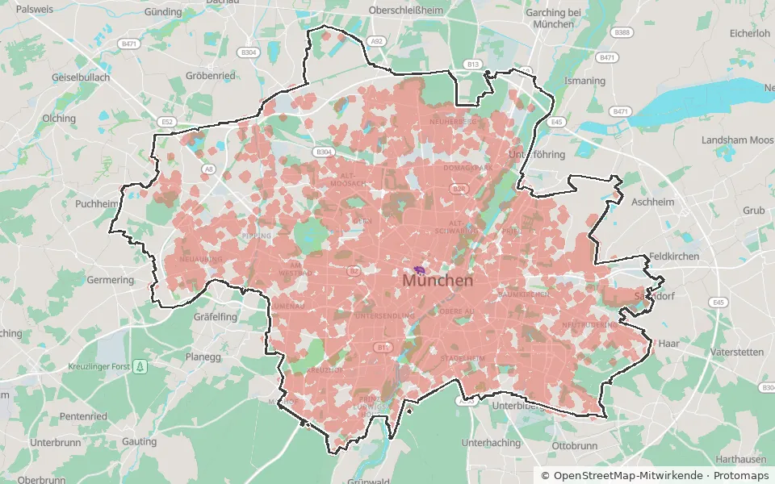
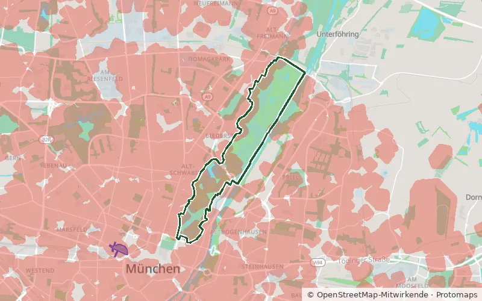
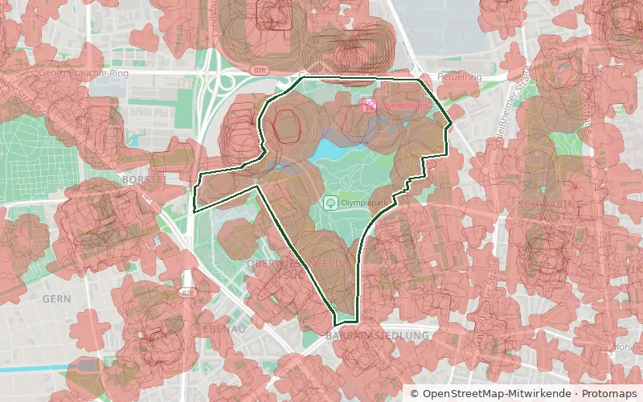
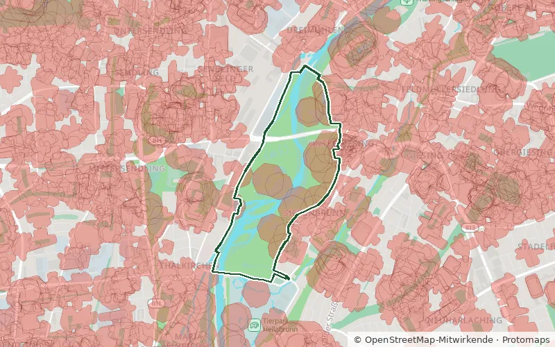
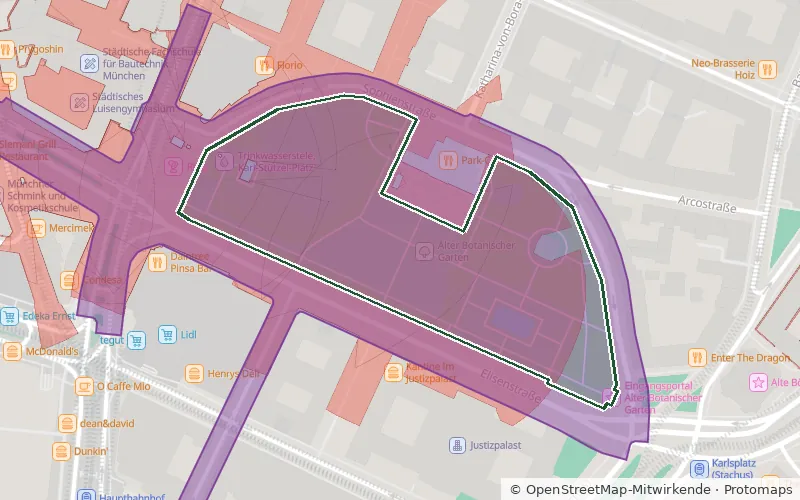
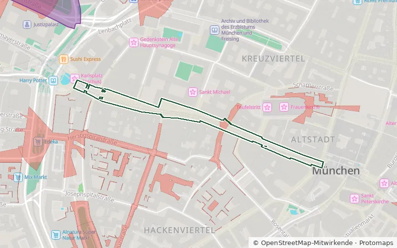
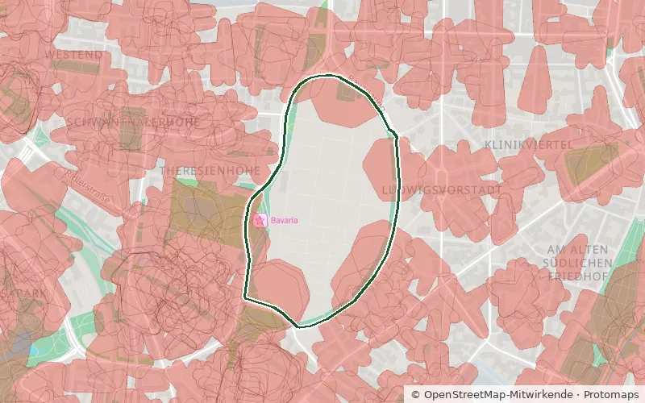

In München ist öffentliches Kiffen auf 86 km² verboten, das sind 27,7 % der Stadtfläche von 311 km². Grund sind 7 493 Einrichtungen, in deren Sichtweite nach § 5 KCanG nicht konsumiert werden darf, vor allem Spielplätze und Sportstätten. Sichtweite heißt: höchstens 100 Meter vom Eingangsbereich, und nur dort, wo kein Gebäude die Sicht verdeckt. Dazu kommen die Fußgängerzone der Altstadt, in der zwischen 7 und 20 Uhr nicht konsumiert werden darf, und überall die unmittelbare Gegenwart von Kindern und Jugendlichen.
Das ist viel: München ist dicht bebaut, mit vielen Spielplätzen und Sportanlagen, und Wald gibt es kaum (11 % der Stadtfläche). In Bayern kommen außerdem Verbote nach Landesrecht hinzu, die die Karte nicht zeigt: in Biergärten und auf Volksfesten (siehe unten).

Woher die Zonen kommen
| Einrichtung | Anzahl | Zonenfläche |
|---|---|---|
| Schulen | 472 | 18,2 km² |
| Kitas und Kindergärten | 1 018 | 19,0 km² |
| Kindertagespflege | 116 | 2,1 km² |
| Spielplätze | 3 160 | 39,2 km² |
| Kinder- und Jugendeinrichtungen | 132 | 2,8 km² |
| Sportstätten | 2 595 | 39,7 km² |
Die Spalte rechts zählt jede Art für sich; weil sich Zonen verschiedener Einrichtungen überlappen, ist ihre Summe größer als die 86 km² oben. Fast gleich viel machen die 3 160 Spielplätze und die 2 595 Sportstätten aus.
Anbauvereinigungen fehlen in der Tabelle: In Bayern hatte das Landesamt bis August 2026 elf erlaubt, keine davon in München belegt (LGL).
Englischer Garten und Parks
Im Englischen Garten (393 ha) liegen 23 % der Fläche in einer Zone: zwölf Spielplätze und 16 Sportanlagen liegen im Park, viele weitere Sportplätze am Rand. Ein eigenes Kiffverbot gibt es dort nicht mehr: Das Verbot der Schlösserverwaltung für Englischen Garten, Hofgarten und Finanzgarten hat der Bayerische Verwaltungsgerichtshof im November 2025 für unwirksam erklärt, das Urteil ist rechtskräftig (BayVGH). Viele Seiten im Netz nennen es noch.

Im Olympiapark sind es 64 %, mit 35 Sportanlagen und sechs Spielplätzen auf dem Gelände, im Westpark 63 %, am Flaucher an der Isar 35 %: Dort liegen acht Spielplätze und zwei Naturkindergärten. Der Hofgarten liegt außerhalb jeder Zone (0 %), der Schlosspark Nymphenburg fast ebenso (3 %).


Auf einem 100 Meter breiten Streifen Land entlang der Isar liegen 31 % in einer Zone.
Alter Botanischer Garten
Die einzige eigene Cannabis-Verbotszone der Stadt umfasst den Alten Botanischen Garten und den Karl-Stützel-Platz am Hauptbahnhof: Konsum und Mitführen von Cannabis und Alkohol sind dort rund um die Uhr verboten. Die Verordnung gilt bis zum 14. Januar 2027 (Stadtrecht München); eine Verlängerung hat der Stadtrat im Oktober 2026 auf den Weg gebracht. Die Karte zeigt die Zone lila. Nach § 5 KCanG allein lägen 90 % des Gartens in einer Zone.

Altstadt und Plätze
Die Fußgängerzone der Altstadt hat die Stadt amtlich abgegrenzt: Die Satzung für die Fußgängerbereiche zählt rund 55 Straßen und Plätze auf, darunter Neuhauser und Kaufingerstraße, Marienplatz, Sendlinger Straße, Theatiner- und Weinstraße; das Tal gehört nicht dazu (Altstadt-Fußgängerbereiche-Satzung). Dort gilt zwischen 7 und 20 Uhr Konsumverbot, ganz gleich, was die Karte rot zeigt; blau zeigt die Karte die Fußgängerbereiche, wie sie in OpenStreetMap eingetragen sind.
Von Neuhauser und Kaufingerstraße liegen nur 3 % zusätzlich in einer Sichtweiten-Zone, vom Marienplatz 0 %, vom Odeonsplatz 0 %. Der Gärtnerplatz liegt zu 36 % in einer Zone, der Viktualienmarkt zu 8 %.

Oktoberfest und Biergärten
Das bayerische Gesundheitsschutzgesetz verbietet, Cannabis zu rauchen, zu erhitzen oder zu verdampfen: in Biergärten und auf den Terrassen von Gaststätten, auf Volksfesten, auf dem Gelände von Spielplätzen, Schulen und Kitas. Das kostet bis zu 1.500 Euro, im Wiederholungsfall bis zu 5.000 Euro (Gesundheitsschutzgesetz). Auf der Theresienwiese gilt das während Oktoberfest und Frühlingsfest; sonst liegen dort 32 % in einer Sichtweiten-Zone. Die Polizei zeigte auf der Wiesn 2026 drei Menschen wegen Cannabis an, 2024 waren es 30 (Polizei, Wiesn-Bilanz 2026).

Ob Christkindlmarkt, Auer Dult und Tollwood als Volksfeste im Sinne des Gesetzes gelten, ist nicht geklärt; der Christkindlmarkt liegt ohnehin in der Fußgängerzone.
Hochschulen
Hochschulen sind nach § 5 KCanG keine Verbotsorte. Das Gelände um das Hauptgebäude der LMU liegt zu 31 % in einer Zone, das Stammgelände der TU München an der Arcisstraße zu 14 %, die Hochschule München zu 37 %. Die Hausordnung der LMU verbietet das Rauchen in Gebäuden; zu Cannabis sagt sie nichts (LMU).
Was sonst noch gilt
Bayern hat feste Bußgelder: Konsum in einer Verbotszone nach § 5 KCanG, auch in der Fußgängerzone, kostet 500 Euro, in Gegenwart von Kindern und Jugendlichen 1.000 Euro; beim zweiten Mal innerhalb von drei Jahren das Doppelte (Bußgeldkatalog Bayern). Zuständig ist in München das Kreisverwaltungsreferat. Weitere Verbotszonen der Stadt außer dem Alten Botanischen Garten gibt es nicht (Stand 26. November 2026).
Häufige Fragen
Wo darf man in München kiffen?
Außerhalb der roten und lila Flächen, außerhalb der Fußgängerzone zwischen 7 und 20 Uhr, nicht in Gegenwart von Kindern und Jugendlichen, nicht dort, wo ein Hausrecht es verbietet, und gerauchtes Cannabis auch nicht in Biergärten und auf Volksfesten. Eine weiße Fläche auf der Karte heißt nicht, dass Konsum dort erlaubt ist: Die Karte kennt weder Hecken noch Bäume, die die Sicht nehmen, noch Einrichtungen, die in OpenStreetMap fehlen.
Darf man im Englischen Garten kiffen?
Ja, das Verbot der Schlösserverwaltung gilt seit dem Urteil von 2025 nicht mehr. Es bleiben die Zonen um Spielplätze und Sportanlagen, die 23 % des Parks abdecken, die Biergärten und das Verbot in Gegenwart von Kindern und Jugendlichen.
Wie genau ist das?
Die Zonen sind aus OpenStreetMap berechnet, mit Gebäuden als Sichthindernis, und werden täglich neu gerechnet; die Zahlen auf dieser Seite sind vom 26. November 2026. Die Karte ist eine Orientierungshilfe, keine Rechtsauskunft. Wie gerechnet wird und wo die Grenzen liegen, steht auf der Über-Seite.
Fehlt eine Einrichtung oder ist eine falsch eingetragen? Korrekturen in OpenStreetMap erscheinen am Tag darauf auf der Karte; nur eintragen, was es vor Ort wirklich gibt.